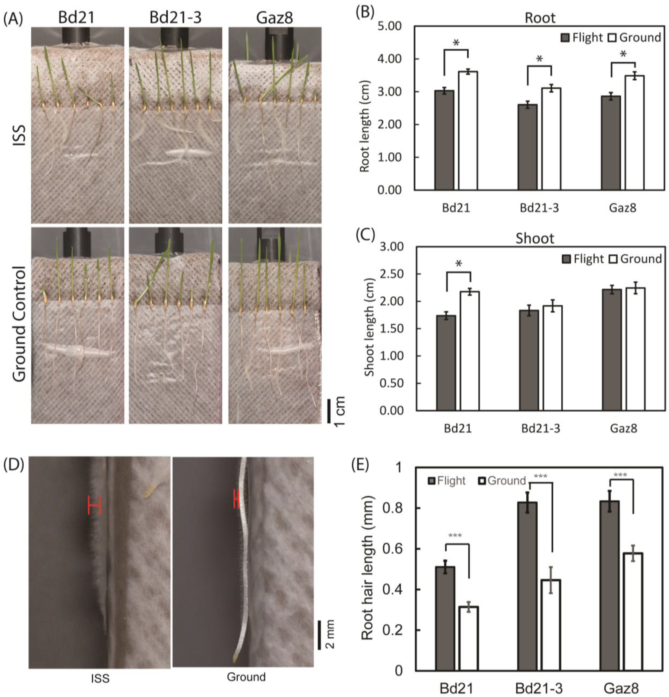
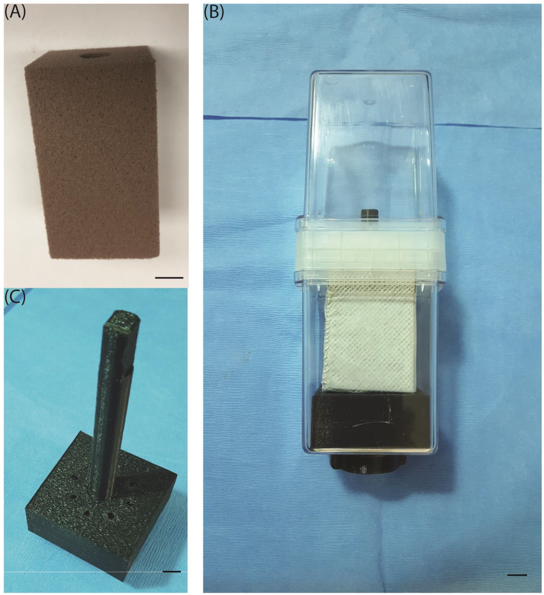

🚀 NASA OSDR OSD-375 (APEX-06) Spaceflight Study
Roots and shoots of Brachypodium distachyon accessions Bd21, Bd21-3 and Gaz8, grown on the International Space Station (launched on SpaceX-14, April 2018) and in a ground control at Kennedy Space Center.
📸 Hardware and Seedlings (Su et al. 2023)

Seedlings. Representative 5-day-old Bd21, Bd21-3 and Gaz8 seedlings grown on the ISS and as ground controls, with root, shoot and root-hair lengths. Reproduced from Su et al. (2023) Life 13(3):626, Fig. 2, CC BY 4.0.

APEX Growth Unit. The Oasis Hortcube foam block that supports the seeds, and the assembled growth unit. Reproduced from Su et al. (2023) Life 13(3):626, Fig. 1, CC BY 4.0.
OSD-375 Sample Design

Figure 1. The 48 OSD-375 RNA-seq samples by accession, organ and condition, counted from the OSDR ISA sample table: four APEX Growth Units per accession and condition, each giving one root and one shoot sample.
What Su et al. (2023) Reported
- Roots of all three accessions grew more slowly and had longer root hairs in microgravity than in the ground control; Bd21 shoots also grew more slowly.
- Differentially expressed genes (DEGs), flight versus ground: Gaz8 4,527, Bd21 1,353, Bd21-3 570. Only 47 shoot DEGs and six root DEGs were shared between accessions.
- Bd21 was sequenced at the University of Wisconsin–Madison (2 × 150 bp) and Bd21-3 and Gaz8 by NASA GeneLab (2 × 100 bp), both on NovaSeq 6000. Differences between accessions are therefore confounded with sequencing batch.
Source: Su, Levine & Masson (2023) Life 13(3):626, doi:10.3390/life13030626. No re-analysis of OSD-375 has been run in this repository; OSDR holds the raw FASTQ files for this study. The gene-level fold changes shown here before 14 October 2026 were typed-in values and were withdrawn.
Mission Hardware, Timeline and Growth Conditions (Fig S1)

Supplementary Figure S1. APEX Growth Unit and seedlings (Su et al. 2023, CC BY 4.0); the APEX-06 timeline from launch to return; and growth conditions from the OSD-375 metadata (22 °C, continuous light at 40–55 µmol m⁻² s⁻¹, 1.397 mGy absorbed dose in flight).